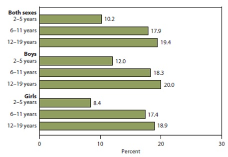
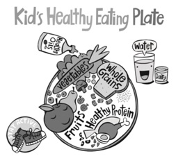

Get Moving!
Childhood obesity has more than doubled in children and qudrupled in adolescents in the past 30 years.
The percentage of children aged 6 – 11 years in the united states who were obese increased from 7 % in 1980 to nearly 18% in 2012. Similarly, the percentage of adolescents aged 12 – 19 years who were obese increased from 5 to nearly 21% over the same period (Ogden et al., 2014).
In 2013, 42 million children under the age of 5 were overweight or obese. Once considered a high-income country problem, overweight and obesity are now on the rise in low- and middle-income countries, particularly in urban settings. In developing countries with emerging economies (classified by the World Bank as lower- and middle-income countries) the rate of increase of childhood overweight and obesity has been more than 30% higher than that of developed countries.
Childhood obesity is associated with a higher chance of obesity, premature death and disability in adulthood. But in addition to increased future risks, obese children experience breathing difficulties, increased risk of fractures, hypertension, early markers of cardiovascular disease, insulin resistance and psychological effects.
Children in low- and middle-income countries are more vulnerable to inadequate pre-natal, infant and young child nutrition. At the same time, they are exposed to high-fat, high-sugar, high-salt, energy-dense, micronutrient-poor foods, which tend to be lower in cost but also lower in nutrient quality. These dietary patterns in conjunction with lower levels of physical activity, result in sharp increases in childhood obesity while undernutrition issues remain unsolved.
Obesity among children and adolescents, by sex and age: United states, 2009 – 2012.

Source : CDC/NCHS, Health , United States, 2014
Excess body weight in children is associated with excess morbidity in childhood and excess body weight in adulthood. In 2009 – 2012, obesity prevalence was higher among children aged 6 – 11 (17.9%) and adolescents aged 12 – 19 (19.4%), compared with 2 to 5 year – olds( 10.2%), CDC/NCHS, Health,United States, 2014.
About one-third of children and adolescents ages 6 to 19 are considered to be overweight or obese.More than 1 in 6 children and adolescents ages 6 to 19 are considered to be obese. Energy balance in children happens when the amount of energy taken in from food or drink and the energy being used by the body support natural growth without promoting excess weight gain.
Many factors can lead to energy imbalance and weight gain. They include genes, eating habits, attitudes and emotions, life habits, and income ( NIH, 1998).
Childhood obesity has both immediate and long-term effects on health and well-being.
Central adiposity is associated with increased risk for type 2 diabetes (T2DM), dyslipidemia, hypertension, sleep-disordered breathing, nonalcoholic fatty liver disease, and polycystic ovarian syndrome(PCOS).
Immediate health effects:
- Obese youth are more likely to have risk factors for cardiovascular disease, such as high cholesterol or high blood pressure. In a population-based sample of 5- to 17-year-olds, 70% of obese youth had at least one risk factor for cardiovascular disease (Freedman et al., 2007).
- Obese adolescents are more likely to have prediabetes, a condition in which blood glucose levels indicate a high risk for development of diabetes (CDC, 2011).
- Children and adolescents who are obese are at greater risk for bone and joint problems, sleep apnea, and social and psychological problems such as stigmatization and poor self-esteem (Office of the Surgeon General, 2010).
Long-term health effects:
- Children and adolescents who are obese are likely to be obese as adultsand are therefore more at risk for adult health problems such as heart disease, type 2 diabetes, stroke, several types of cancer, and osteoarthritis. One study showed that children who became obese as early as age 2 were more likely to be obese as adults (Freedman et al., 2005).
- Overweight and obesity are associated with increased risk for many types of cancer, including cancer of the breast, colon, endometrium, esophagus, kidney, pancreas, gall bladder, thyroid, ovary, cervix, and prostate.
- The physical activity guidelines recommend that children and youth get at least 60 minutes of physical activity daily.
- In the age group of 6 to 11, almost half of boys (49 percent) and about a third of girls (35 percent) get the recommended amount of physical activity.Physical activity declines with age. While 42 percent of children ages 6 to 11 get 60 minutes a day of physical activity, only about 8 percent of adolescents ages 12 to 15 reach this goal (Troiano et al., 2008).
- Routine body mass index(BMI) screening of children on age – appropriate growth charts is necessary to identify those requiring further assessment.
Healthy lifestyle habits, including healthy eating and physical activity, can lower the risk of becoming obese and developing related diseases.
Get Moving!

- Physical activity improves Health.
- Choose indoor and outdoor activities.
- Walk more.
- Limit TV, Computer games, and internetto no more than one hour a day.
- Eat smaller amounts – bigger is not better.
- Drink water or try diet drinks, seltzer, or Low-fat Milk.
- Serve a Fruit and a Vegetable at each meal.
- Prepare more meals at home.
- Snacks on Fruits and Vegetables.
- Switch to 1% or Fat- free milk.
- Don’t Skip breakfast.
References:
- Ogden CL, Carroll MD, Kit BK, Flegal KM. Prevalence of childhood and adult obesity in the United States, 2011-2012. Journal of the American Medical Association 2014;311(8):806-814.
- National Institutes of Health. Clinical guidelines on the identification, evaluation, and treatment of overweight and obesity in adults: The evidence report. National Heart, Lung, and Blood Institute; September 1998. NIH Publication No. 98–4083. Available online:http://www.nhlbi.nih.gov/health-pro/guidelines/archive/clinical-guidelines-obesity-adults-evidence-report.
- Troiano RP, Berrigan D, Dodd KW, Mâsse LC, Tilert T, McDowell M. Physical activity in the United States measured by accelerometer.Medicine& Science in Sports & Exercise. 2008;40(1):181–188. Available online: http://www.ncbi.nlm.nih.gov/pubmed/18091006.
- Freedman DS, Zuguo M, Srinivasan SR, Berenson GS, Dietz WH. Cardiovascular risk factors and excess adiposity among overweight children and adolescents: the Bogalusa Heart Study. Journal of Pediatrics 2007;150(1):12–17.
- CDC. National diabetes fact sheet: national estimates and general information on diabetes and prediabetes in the United States, 2011[PDF - 2.7 MB]. Atlanta, GA: U.S. Department of Health and Human Services.
- Office of the Surgeon General. The Surgeon General's Vision for a Healthy and Fit Nation.[PDF - 840 KB]. Rockville, MD, U.S. Department of Health and Human Services; 2010.
- Freedman DS, Kettel L, Serdula MK, Dietz WH, Srinivasan SR, Berenson GS. The relation of childhood BMI to adult adiposity: the Bogalusa Heart Study. Pediatrics2005;115:22–27.
Related Links: